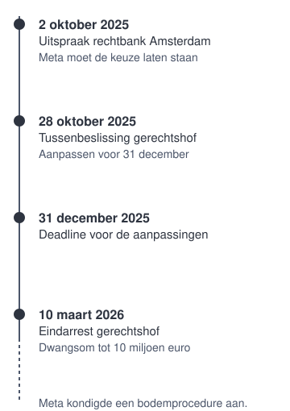

Bits of Freedom tegen Meta
Bits of Freedom tegen Meta is een Nederlandse rechtszaak over de tijdlijn van Facebook en Instagram. De organisatie Bits of Freedom stapte naar de rechter omdat gebruikers volgens haar niet echt konden kiezen voor een tijdlijn die niet op hen is afgestemd. De zaak speelde in 2025 en 2026 bij de rechtbank en het gerechtshof in Amsterdam.

Achtergrond
Apps als Facebook en Instagram gebruiken een aanbevelingssysteem. Dat systeem bepaalt welke berichten je ziet en in welke volgorde. Meestal gebeurt dat op basis van profilering: het systeem kijkt naar wat je eerder deed, zoals wat je liket, bekijkt en volgt, en laat je meer zien van wat daarop lijkt. Het tegenovergestelde is een tijdlijn zonder profilering, bijvoorbeeld een tijdlijn waarin berichten op volgorde van tijd staan.
De Europese wet
In 2022 nam de Europese Unie de Digital Services Act aan, een wet met regels voor online platforms. Artikel 38 van die wet zegt dat zeer grote platforms bij hun aanbevelingssystemen minstens één optie moeten bieden die niet gebaseerd is op profilering. In april 2023 wees de Europese Commissie Facebook en Instagram aan als zeer grote platforms, omdat ze in de Europese Unie meer dan 45 miljoen gebruikers per maand hebben.
De uitspraak van de rechtbank
Op 2 oktober 2025 deed de voorzieningenrechter van de rechtbank Amsterdam uitspraak in een kort geding tussen Bits of Freedom en Meta. Een kort geding is een snelle procedure voor een voorlopige uitspraak. De rechter oordeelde dat Facebook en Instagram op onderdelen in strijd waren met de Digital Services Act. Het probleem was dat de keuze van een gebruiker voor de tijdlijn niet bleef staan. De instelling sprong steeds automatisch terug naar de tijdlijn met profilering, als een gebruiker naar een ander deel van de app ging of de app opnieuw opende. De rechter beval Meta om dit binnen twee weken aan te passen. Deed Meta dat niet, dan moest het een dwangsom betalen tot maximaal 5 miljoen euro.
Het hoger beroep
Meta ging in hoger beroep. Op 28 oktober 2025 besliste het gerechtshof Amsterdam in een tussenbeslissing dat Meta de aanpassingen uiterlijk op 31 december 2025 moest hebben uitgevoerd. Op 10 maart 2026 volgde het eindarrest. Volgens het hof had Meta een groot deel van de maatregelen genomen, maar nog niet allemaal. Het hof verhoogde het maximum van de dwangsommen naar 10 miljoen euro, omdat 5 miljoen volgens het hof niet genoeg prikkel was om de uitspraak na te komen.
Hoe het verder gaat
Met het eindarrest is het kort geding bij het hof afgelopen. Daartegen kan nog beroep in cassatie worden ingesteld bij de Hoge Raad. Meta trok een groot deel van haar bezwaren in, maar is het nog steeds niet eens met de uitspraak. Het bedrijf kondigde een bodemprocedure aan. Dat is een uitgebreide rechtszaak waarin een definitief oordeel wordt gegeven.
Waarom de zaak belangrijk is
De zaak gaat over de vraag of je als gebruiker zelf kunt kiezen wat je ziet. De Europese wet schrijft die keuze voor. De rechter oordeelde dat die keuze ook in de praktijk moet blijven staan, en niet steeds ongemerkt terug mag springen.
Zie ook
Wie kiest er echt, het manifest op pagina 1 van deze site.